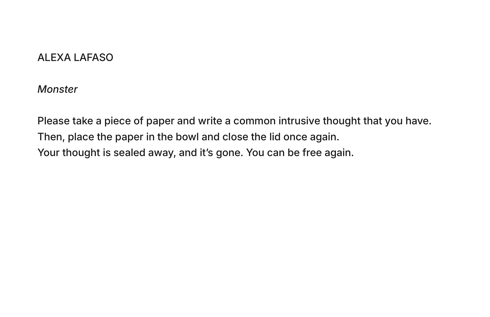

I was tasked with choosing a dataset from the internet and creating a website that related to it somehow, creatively.
I chose this dataset because I have a close personal tie to it. I could be one of the data points or variables in the set, as I chose a set that relates to OCD patients, and I, too, have OCD. The dataset contains information on patients’ age, gender, ethnicity, marital status, education level, date of diagnosis, obsession type, and more.
I am thinking about extracting a narrative about mental health awareness and how often things like OCD are overlooked, swept under the rug, or simplified. I believe that this is detrimental to people who suffer from OCD (such as myself), as it is often extremely trivialized. OCD is not simply needing to keep things in order or keep clean. It can be extremely hard to live with and overcome.
The data was collected by a doctor/psychiatrist’s office that deals with OCD patients. I assume the data was collected via a survey, but it could have been collected through some kind of patient website or portal. The set was last updated three years ago.
I was then tasked with creating a physical manifestation of the dataset, for which I chose to produce a paper-mache bowl/container. The container is red and dark, covered in spikes, and features a rough, handmade feel. I believe that this object represents how I see the OCD that lives within me. I almost picture an X-Ray of my body, with this spike residing somewhere near my chest. It’s a physical representation of a monster, my monster.
When displaying the piece, I also laid out an instruction sheet, a few pens, and strips of paper. The instruction sheet states as follows,
